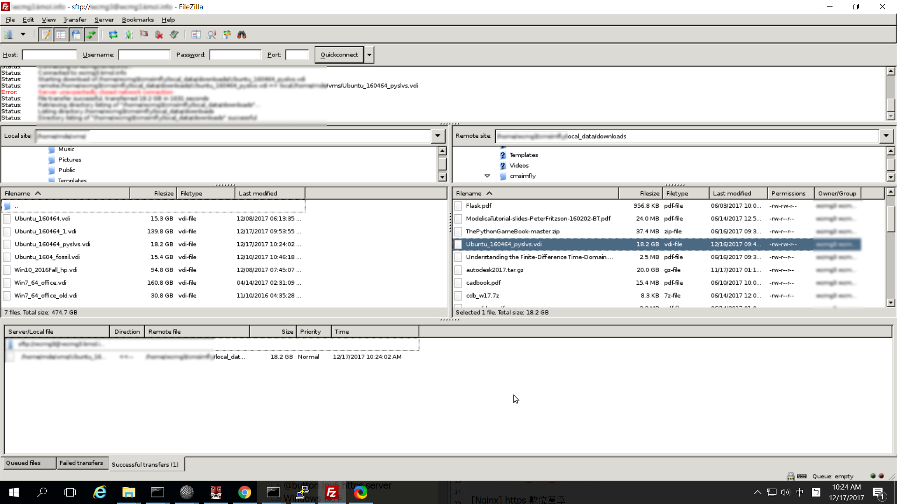

假如您認同機械設計就是靈活運用六種表達, 明確說明如何透過固體、流體與軟體元件之互動運作, 而能達成預定結果之明確與具體表達. 那麼隨著電子隨身裝置的普及, 資訊通信系統的持續整合, 機械設計工程師對於軟體元件互動運作細節的認知, 也勢必與時俱進.
以下這張圖, 是在一台中華電信光世代網路連線下的 Windows 10 電腦, 啟動 X Windows Server, 以 SSH 連線, 夾帶 X Windows Tunneling 設定, 連線到 TANet 網路上的一台, 擁有多片網路卡, 以 Virtualbox Bridge Adapter 啟動四台虛擬伺服器的 IPv4 Linux 主控伺服器.

此一網路連線的目的, 是在近端 Windows 10 電腦上進行操控, 透過 SSH 連線到目的伺服器上, 從一台只有 IPv6 網路連線設定的伺服器上, 下載一份 18.2 GB 的 vdi 檔案, 以便能夠在這台 IPv4 Linux 主控伺服器上, 再建置一台支援 Jupyterhub 或 Jupyterlab 伺服主機. 這時從只支援 IPv4 的電腦連線到只支援 IPv6 的伺服器, 必須設法透過雙協定支援的 Proxy Server 才能執行 Filezilla 上的 SFTP 連線.
最終, 此一操作的目的, 只是希望在全球資訊網上建立一個能夠支援與機構分析及合成有關的基因演算伺服運算環境, 若機械設計工程師完成基本的機構設計分析與確認後, 還需要針對機構所需各部零件進行強度與細部設計, 但是上述這些在資訊與通信科技領域中, 習以為常的網路操作技術, 在無任何其他單位的支援下, 若希望快速布局, 就必須逐一克服, 順利完成機械設計流程中所預定達成的結果.
X Windows
X Windows 是一種軟體視窗系統, 可以從 Client 端將圖形化程式介面傳輸到 Server 端, 此地的 X Windows Client 端就是透過 SSH 被 Windows 10 電腦連線的 Linux 伺服器, 而 X Windows Server 端就是在 Windows 10 上所啟動的 Xming Server, 當 Windows 10 中的 Putty Client 連線後, 在 Linux 上執行 Filezilla 後, 就可以將 Filezilla 客戶端的 X Windows 視窗畫面, 顯示在 Windows 10 中.
由於以 Putty 連線的兩端都支援 IPv4 網路協定, 因此可直接連線, 若其中一端只支援 IPv6 網路協定, 則必須在 Putty 連線設定中的 Connect - Proxy 中設定 IPv4/IPv6 雙支援的代理主機, 而此代理主機可以採用 Squid, 使用下列 squid.conf 設定:
acl cad_lab src 140.130.17.0/24 acl cad_lab src 2001:288:6004:17::/64 acl SSL_ports port 443 acl Safe_ports port 80 # http acl Safe_ports port 88 #acl Safe_ports port 21 # ftp acl SSL_ports port 8443 acl Safe_ports port 8443 acl SSL_ports port 9443 acl Safe_ports port 9443 acl SSL_ports port 22 acl Safe_ports port 22 acl Safe_ports port 443 # https acl Safe_ports port 1025-65535 # unregistered ports acl Safe_ports port 280 # http-mgmt acl Safe_ports port 488 # gss-http acl Safe_ports port 591 # filemaker acl Safe_ports port 777 # multiling http acl CONNECT method CONNECT # Deny requests to certain unsafe ports http_access deny !Safe_ports # Deny CONNECT to other than secure SSL ports http_access deny CONNECT !SSL_ports http_access allow cad_lab http_access deny all # Only allow cachemgr access from localhost http_access allow localhost manager http_access deny manager #http_access allow localnet http_access allow localhost # And finally deny all other access to this proxy http_access deny all # Squid normally listens to port 3128 http_port 3128 #cache_dir ufs /var/spool/squid 100 16 256 icp_port 3130 icp_access allow all cache_dir ufs /var/spool/squid 2000 16 256 cache_peer 140.130.17.17 sibling 3128 3130 cache_peer 140.130.17.4 sibling 3128 3130 cache_peer 140.130.17.9 sibling 3128 3130 cache_peer 140.130.17.53 sibling 3128 3130 cache_peer 140.130.17.42 sibling 3128 3130 # # Add any of your own refresh_pattern entries above these. # refresh_pattern ^ftp: 1440 20% 10080 refresh_pattern ^gopher: 1440 0% 1440 refresh_pattern -i (/cgi-bin/|\?) 0 0% 0 refresh_pattern (Release|Packages(.gz)*)$ 0 20% 2880 refresh_pattern . 0 20% 4320
至於所謂 X Windows Tunneling, 以 Putty 而言, 設定位於 Connection-SSH-X11-X11 forwarding, 其中除了勾選 Enable X 11 forwarding 外, X display location 設為 localhost:0.0
Virtualbox
至於在 Virtualbox 中採 Virtualbox Bridge Adapter 網路卡設定的虛擬主機, 目的在於透過主體電腦的實體網路卡, 直接讓虛擬主機與實體網路卡對應, 可以從外部接受網路封包, 擔任虛擬伺服器的角色.
由於一台 Virtualbox 的虛擬伺服器最多可以啟用 36 片網路卡, 因此能夠測試多種複雜的主機網路連線設定, 讓伺服器實體配置硬體網路卡之前, 簡化配置測試的工作.
Filezilla
Filezilla 是跨操作平台的 SFTP Client, 當遠端的 Linux 主機要透過 Filezilla 連線到只支援 IPv6 協定主機時, 必須在 Edit-Settings-Connection-Generic Proxy 中設定能同時支援 IPv4/IPv6 的代理主機.
Comments
comments powered by Disqus